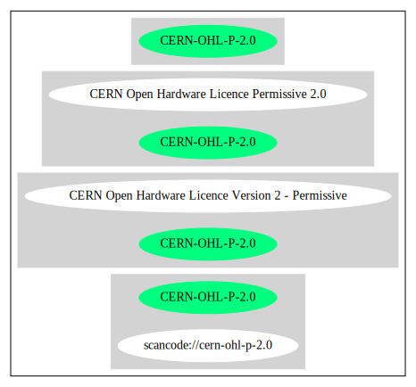

Key |
Value |
|---|---|
Fullname |
CERN Open Hardware Licence Version 2 - Permissive |
Shortname |
CERN-OHL-P-2.0 |
Rating |
Unknown, probably Attention or Stop or No-Go |
Classification |
NoCopyleft |
Other Names:
scancode://cern-ohl-p-2.0
Homepage: https://www.ohwr.org/project/cernohl/wikis/Documents/CERN-OHL-version-2
SPDX: http://spdx.org/licenses/CERN-OHL-P-2.0.json
https://ohwr.org/project/cernohl
https://cern-ohl.web.cern.ch/
https://ohwr.org/project/cernohl/wikis/Documents/CERN-OHL-version-2
https://ohwr.org/project/cernohl/wikis/uploads/0be6f561d2b4a686c5765c74be32daf9/CERN_OHL_rationale.pdf
CERN Open Hardware Licence Version 2 - Permissive
Preamble
CERN has developed this licence to promote collaboration among
hardware designers and to provide a legal tool which supports the
freedom to use, study, modify, share and distribute hardware designs
and products based on those designs. Version 2 of the CERN Open
Hardware Licence comes in three variants: this licence, CERN-OHL-P
(permissive); and two reciprocal licences: CERN- OHL-W (weakly
reciprocal) and CERN-OHL-S (strongly reciprocal).
The CERN-OHL-P is copyright CERN 2020. Anyone is welcome to use it, in
unmodified form only.
Use of this Licence does not imply any endorsement by CERN of any
Licensor or their designs nor does it imply any involvement by CERN in
their development.
1 Definitions
1.1 'Licence' means this CERN-OHL-P.
1.2 'Source' means information such as design materials or digital
code which can be applied to Make or test a Product or to
prepare a Product for use, Conveyance or sale, regardless of its
medium or how it is expressed. It may include Notices.
1.3 'Covered Source' means Source that is explicitly made available
under this Licence.
1.4 'Product' means any device, component, work or physical object,
whether in finished or intermediate form, arising from the use,
application or processing of Covered Source.
1.5 'Make' means to create or configure something, whether by
manufacture, assembly, compiling, loading or applying Covered
Source or another Product or otherwise.
1.6 'Notice' means copyright, acknowledgement and trademark notices,
references to the location of any Notices, modification notices
(subsection 3.3(b)) and all notices that refer to this Licence
and to the disclaimer of warranties that are included in the
Covered Source.
1.7 'Licensee' or 'You' means any person exercising rights under
this Licence.
1.8 'Licensor' means a person who creates Source or modifies Covered
Source and subsequently Conveys the resulting Covered Source
under the terms and conditions of this Licence. A person may be
a Licensee and a Licensor at the same time.
1.9 'Convey' means to communicate to the public or distribute.
2 Applicability
2.1 This Licence governs the use, copying, modification, Conveying
of Covered Source and Products, and the Making of Products. By
exercising any right granted under this Licence, You irrevocably
accept these terms and conditions.
2.2 This Licence is granted by the Licensor directly to You, and
shall apply worldwide and without limitation in time.
2.3 You shall not attempt to restrict by contract or otherwise the
rights granted under this Licence to other Licensees.
2.4 This Licence is not intended to restrict fair use, fair dealing,
or any other similar right.
3 Copying, modifying and Conveying Covered Source
3.1 You may copy and Convey verbatim copies of Covered Source, in
any medium, provided You retain all Notices.
3.2 You may modify Covered Source, other than Notices.
You may only delete Notices if they are no longer applicable to
the corresponding Covered Source as modified by You and You may
add additional Notices applicable to Your modifications.
3.3 You may Convey modified Covered Source (with the effect that You
shall also become a Licensor) provided that You:
a) retain Notices as required in subsection 3.2; and
b) add a Notice to the modified Covered Source stating that You
have modified it, with the date and brief description of how
You have modified it.
3.4 You may Convey Covered Source or modified Covered Source under
licence terms which differ from the terms of this Licence
provided that:
a) You comply at all times with subsection 3.3; and
b) You provide a copy of this Licence to anyone to whom You
Convey Covered Source or modified Covered Source.
4 Making and Conveying Products
You may Make Products, and/or Convey them, provided that You ensure
that the recipient of the Product has access to any Notices applicable
to the Product.
5 DISCLAIMER AND LIABILITY
5.1 DISCLAIMER OF WARRANTY -- The Covered Source and any Products
are provided 'as is' and any express or implied warranties,
including, but not limited to, implied warranties of
merchantability, of satisfactory quality, non-infringement of
third party rights, and fitness for a particular purpose or use
are disclaimed in respect of any Source or Product to the
maximum extent permitted by law. The Licensor makes no
representation that any Source or Product does not or will not
infringe any patent, copyright, trade secret or other
proprietary right. The entire risk as to the use, quality, and
performance of any Source or Product shall be with You and not
the Licensor. This disclaimer of warranty is an essential part
of this Licence and a condition for the grant of any rights
granted under this Licence.
5.2 EXCLUSION AND LIMITATION OF LIABILITY -- The Licensor shall, to
the maximum extent permitted by law, have no liability for
direct, indirect, special, incidental, consequential, exemplary,
punitive or other damages of any character including, without
limitation, procurement of substitute goods or services, loss of
use, data or profits, or business interruption, however caused
and on any theory of contract, warranty, tort (including
negligence), product liability or otherwise, arising in any way
in relation to the Covered Source, modified Covered Source
and/or the Making or Conveyance of a Product, even if advised of
the possibility of such damages, and You shall hold the
Licensor(s) free and harmless from any liability, costs,
damages, fees and expenses, including claims by third parties,
in relation to such use.
6 Patents
6.1 Subject to the terms and conditions of this Licence, each
Licensor hereby grants to You a perpetual, worldwide,
non-exclusive, no-charge, royalty-free, irrevocable (except as
stated in this section 6, or where terminated by the Licensor
for cause) patent license to Make, have Made, use, offer to
sell, sell, import, and otherwise transfer the Covered Source
and Products, where such licence applies only to those patent
claims licensable by such Licensor that are necessarily
infringed by exercising rights under the Covered Source as
Conveyed by that Licensor.
6.2 If You institute patent litigation against any entity (including
a cross-claim or counterclaim in a lawsuit) alleging that the
Covered Source or a Product constitutes direct or contributory
patent infringement, or You seek any declaration that a patent
licensed to You under this Licence is invalid or unenforceable
then any rights granted to You under this Licence shall
terminate as of the date such process is initiated.
7 General
7.1 If any provisions of this Licence are or subsequently become
invalid or unenforceable for any reason, the remaining
provisions shall remain effective.
7.2 You shall not use any of the name (including acronyms and
abbreviations), image, or logo by which the Licensor or CERN is
known, except where needed to comply with section 3, or where
the use is otherwise allowed by law. Any such permitted use
shall be factual and shall not be made so as to suggest any kind
of endorsement or implication of involvement by the Licensor or
its personnel.
7.3 CERN may publish updated versions and variants of this Licence
which it considers to be in the spirit of this version, but may
differ in detail to address new problems or concerns. New
versions will be published with a unique version number and a
variant identifier specifying the variant. If the Licensor has
specified that a given variant applies to the Covered Source
without specifying a version, You may treat that Covered Source
as being released under any version of the CERN-OHL with that
variant. If no variant is specified, the Covered Source shall be
treated as being released under CERN-OHL-S. The Licensor may
also specify that the Covered Source is subject to a specific
version of the CERN-OHL or any later version in which case You
may apply this or any later version of CERN-OHL with the same
variant identifier published by CERN.
7.4 This Licence shall not be enforceable except by a Licensor
acting as such, and third party beneficiary rights are
specifically excluded.
{
"__impliedNames": [
"CERN-OHL-P-2.0",
"CERN Open Hardware Licence Version 2 - Permissive",
"scancode://cern-ohl-p-2.0"
],
"__impliedId": "CERN-OHL-P-2.0",
"facts": {
"SPDX": {
"isSPDXLicenseDeprecated": false,
"spdxFullName": "CERN Open Hardware Licence Version 2 - Permissive",
"spdxDetailsURL": "http://spdx.org/licenses/CERN-OHL-P-2.0.json",
"_sourceURL": "https://spdx.org/licenses/CERN-OHL-P-2.0.html",
"spdxLicIsOSIApproved": false,
"spdxSeeAlso": [
"https://www.ohwr.org/project/cernohl/wikis/Documents/CERN-OHL-version-2"
],
"_implications": {
"__impliedNames": [
"CERN-OHL-P-2.0",
"CERN Open Hardware Licence Version 2 - Permissive"
],
"__impliedId": "CERN-OHL-P-2.0",
"__isOsiApproved": false,
"__impliedURLs": [
[
"SPDX",
"http://spdx.org/licenses/CERN-OHL-P-2.0.json"
],
[
null,
"https://www.ohwr.org/project/cernohl/wikis/Documents/CERN-OHL-version-2"
]
]
},
"spdxLicenseId": "CERN-OHL-P-2.0"
},
"Scancode": {
"otherUrls": [
"https://ohwr.org/project/cernohl",
"https://cern-ohl.web.cern.ch/",
"https://ohwr.org/project/cernohl/wikis/Documents/CERN-OHL-version-2",
"https://ohwr.org/project/cernohl/wikis/uploads/0be6f561d2b4a686c5765c74be32daf9/CERN_OHL_rationale.pdf"
],
"homepageUrl": "https://www.ohwr.org/project/cernohl/wikis/Documents/CERN-OHL-version-2",
"shortName": "CERN-OHL-P-2.0",
"textUrls": null,
"text": "CERN Open Hardware Licence Version 2 - Permissive\n\n\nPreamble\n\nCERN has developed this licence to promote collaboration among\nhardware designers and to provide a legal tool which supports the\nfreedom to use, study, modify, share and distribute hardware designs\nand products based on those designs. Version 2 of the CERN Open\nHardware Licence comes in three variants: this licence, CERN-OHL-P\n(permissive); and two reciprocal licences: CERN- OHL-W (weakly\nreciprocal) and CERN-OHL-S (strongly reciprocal).\n\nThe CERN-OHL-P is copyright CERN 2020. Anyone is welcome to use it, in\nunmodified form only.\n\nUse of this Licence does not imply any endorsement by CERN of any\nLicensor or their designs nor does it imply any involvement by CERN in\ntheir development.\n\n\n1 Definitions\n\n 1.1 'Licence' means this CERN-OHL-P.\n\n 1.2 'Source' means information such as design materials or digital\n code which can be applied to Make or test a Product or to\n prepare a Product for use, Conveyance or sale, regardless of its\n medium or how it is expressed. It may include Notices.\n\n 1.3 'Covered Source' means Source that is explicitly made available\n under this Licence.\n\n 1.4 'Product' means any device, component, work or physical object,\n whether in finished or intermediate form, arising from the use,\n application or processing of Covered Source.\n\n 1.5 'Make' means to create or configure something, whether by\n manufacture, assembly, compiling, loading or applying Covered\n Source or another Product or otherwise.\n\n 1.6 'Notice' means copyright, acknowledgement and trademark notices,\n references to the location of any Notices, modification notices\n (subsection 3.3(b)) and all notices that refer to this Licence\n and to the disclaimer of warranties that are included in the\n Covered Source.\n\n 1.7 'Licensee' or 'You' means any person exercising rights under\n this Licence.\n\n 1.8 'Licensor' means a person who creates Source or modifies Covered\n Source and subsequently Conveys the resulting Covered Source\n under the terms and conditions of this Licence. A person may be\n a Licensee and a Licensor at the same time.\n\n 1.9 'Convey' means to communicate to the public or distribute.\n\n\n2 Applicability\n\n 2.1 This Licence governs the use, copying, modification, Conveying\n of Covered Source and Products, and the Making of Products. By\n exercising any right granted under this Licence, You irrevocably\n accept these terms and conditions.\n\n 2.2 This Licence is granted by the Licensor directly to You, and\n shall apply worldwide and without limitation in time.\n\n 2.3 You shall not attempt to restrict by contract or otherwise the\n rights granted under this Licence to other Licensees.\n\n 2.4 This Licence is not intended to restrict fair use, fair dealing,\n or any other similar right.\n\n\n3 Copying, modifying and Conveying Covered Source\n\n 3.1 You may copy and Convey verbatim copies of Covered Source, in\n any medium, provided You retain all Notices.\n\n 3.2 You may modify Covered Source, other than Notices.\n\n You may only delete Notices if they are no longer applicable to\n the corresponding Covered Source as modified by You and You may\n add additional Notices applicable to Your modifications.\n\n 3.3 You may Convey modified Covered Source (with the effect that You\n shall also become a Licensor) provided that You:\n\n a) retain Notices as required in subsection 3.2; and\n\n b) add a Notice to the modified Covered Source stating that You\n have modified it, with the date and brief description of how\n You have modified it.\n\n 3.4 You may Convey Covered Source or modified Covered Source under\n licence terms which differ from the terms of this Licence\n provided that:\n\n a) You comply at all times with subsection 3.3; and\n\n b) You provide a copy of this Licence to anyone to whom You\n Convey Covered Source or modified Covered Source.\n\n\n4 Making and Conveying Products\n\nYou may Make Products, and/or Convey them, provided that You ensure\nthat the recipient of the Product has access to any Notices applicable\nto the Product.\n\n\n5 DISCLAIMER AND LIABILITY\n\n 5.1 DISCLAIMER OF WARRANTY -- The Covered Source and any Products\n are provided 'as is' and any express or implied warranties,\n including, but not limited to, implied warranties of\n merchantability, of satisfactory quality, non-infringement of\n third party rights, and fitness for a particular purpose or use\n are disclaimed in respect of any Source or Product to the\n maximum extent permitted by law. The Licensor makes no\n representation that any Source or Product does not or will not\n infringe any patent, copyright, trade secret or other\n proprietary right. The entire risk as to the use, quality, and\n performance of any Source or Product shall be with You and not\n the Licensor. This disclaimer of warranty is an essential part\n of this Licence and a condition for the grant of any rights\n granted under this Licence.\n\n 5.2 EXCLUSION AND LIMITATION OF LIABILITY -- The Licensor shall, to\n the maximum extent permitted by law, have no liability for\n direct, indirect, special, incidental, consequential, exemplary,\n punitive or other damages of any character including, without\n limitation, procurement of substitute goods or services, loss of\n use, data or profits, or business interruption, however caused\n and on any theory of contract, warranty, tort (including\n negligence), product liability or otherwise, arising in any way\n in relation to the Covered Source, modified Covered Source\n and/or the Making or Conveyance of a Product, even if advised of\n the possibility of such damages, and You shall hold the\n Licensor(s) free and harmless from any liability, costs,\n damages, fees and expenses, including claims by third parties,\n in relation to such use.\n\n\n6 Patents\n\n 6.1 Subject to the terms and conditions of this Licence, each\n Licensor hereby grants to You a perpetual, worldwide,\n non-exclusive, no-charge, royalty-free, irrevocable (except as\n stated in this section 6, or where terminated by the Licensor\n for cause) patent license to Make, have Made, use, offer to\n sell, sell, import, and otherwise transfer the Covered Source\n and Products, where such licence applies only to those patent\n claims licensable by such Licensor that are necessarily\n infringed by exercising rights under the Covered Source as\n Conveyed by that Licensor.\n\n 6.2 If You institute patent litigation against any entity (including\n a cross-claim or counterclaim in a lawsuit) alleging that the\n Covered Source or a Product constitutes direct or contributory\n patent infringement, or You seek any declaration that a patent\n licensed to You under this Licence is invalid or unenforceable\n then any rights granted to You under this Licence shall\n terminate as of the date such process is initiated.\n\n\n7 General\n\n 7.1 If any provisions of this Licence are or subsequently become\n invalid or unenforceable for any reason, the remaining\n provisions shall remain effective.\n\n 7.2 You shall not use any of the name (including acronyms and\n abbreviations), image, or logo by which the Licensor or CERN is\n known, except where needed to comply with section 3, or where\n the use is otherwise allowed by law. Any such permitted use\n shall be factual and shall not be made so as to suggest any kind\n of endorsement or implication of involvement by the Licensor or\n its personnel.\n\n 7.3 CERN may publish updated versions and variants of this Licence\n which it considers to be in the spirit of this version, but may\n differ in detail to address new problems or concerns. New\n versions will be published with a unique version number and a\n variant identifier specifying the variant. If the Licensor has\n specified that a given variant applies to the Covered Source\n without specifying a version, You may treat that Covered Source\n as being released under any version of the CERN-OHL with that\n variant. If no variant is specified, the Covered Source shall be\n treated as being released under CERN-OHL-S. The Licensor may\n also specify that the Covered Source is subject to a specific\n version of the CERN-OHL or any later version in which case You\n may apply this or any later version of CERN-OHL with the same\n variant identifier published by CERN.\n\n 7.4 This Licence shall not be enforceable except by a Licensor\n acting as such, and third party beneficiary rights are\n specifically excluded.\n",
"category": "Permissive",
"osiUrl": null,
"owner": "CERN",
"_sourceURL": "https://github.com/nexB/scancode-toolkit/blob/develop/src/licensedcode/data/licenses/cern-ohl-p-2.0.yml",
"key": "cern-ohl-p-2.0",
"name": "CERN Open Hardware Licence Version 2 - Permissive",
"spdxId": "CERN-OHL-P-2.0",
"notes": null,
"_implications": {
"__impliedNames": [
"scancode://cern-ohl-p-2.0",
"CERN-OHL-P-2.0",
"CERN-OHL-P-2.0"
],
"__impliedId": "CERN-OHL-P-2.0",
"__impliedCopyleft": [
[
"Scancode",
"NoCopyleft"
]
],
"__calculatedCopyleft": "NoCopyleft",
"__impliedText": "CERN Open Hardware Licence Version 2 - Permissive\n\n\nPreamble\n\nCERN has developed this licence to promote collaboration among\nhardware designers and to provide a legal tool which supports the\nfreedom to use, study, modify, share and distribute hardware designs\nand products based on those designs. Version 2 of the CERN Open\nHardware Licence comes in three variants: this licence, CERN-OHL-P\n(permissive); and two reciprocal licences: CERN- OHL-W (weakly\nreciprocal) and CERN-OHL-S (strongly reciprocal).\n\nThe CERN-OHL-P is copyright CERN 2020. Anyone is welcome to use it, in\nunmodified form only.\n\nUse of this Licence does not imply any endorsement by CERN of any\nLicensor or their designs nor does it imply any involvement by CERN in\ntheir development.\n\n\n1 Definitions\n\n 1.1 'Licence' means this CERN-OHL-P.\n\n 1.2 'Source' means information such as design materials or digital\n code which can be applied to Make or test a Product or to\n prepare a Product for use, Conveyance or sale, regardless of its\n medium or how it is expressed. It may include Notices.\n\n 1.3 'Covered Source' means Source that is explicitly made available\n under this Licence.\n\n 1.4 'Product' means any device, component, work or physical object,\n whether in finished or intermediate form, arising from the use,\n application or processing of Covered Source.\n\n 1.5 'Make' means to create or configure something, whether by\n manufacture, assembly, compiling, loading or applying Covered\n Source or another Product or otherwise.\n\n 1.6 'Notice' means copyright, acknowledgement and trademark notices,\n references to the location of any Notices, modification notices\n (subsection 3.3(b)) and all notices that refer to this Licence\n and to the disclaimer of warranties that are included in the\n Covered Source.\n\n 1.7 'Licensee' or 'You' means any person exercising rights under\n this Licence.\n\n 1.8 'Licensor' means a person who creates Source or modifies Covered\n Source and subsequently Conveys the resulting Covered Source\n under the terms and conditions of this Licence. A person may be\n a Licensee and a Licensor at the same time.\n\n 1.9 'Convey' means to communicate to the public or distribute.\n\n\n2 Applicability\n\n 2.1 This Licence governs the use, copying, modification, Conveying\n of Covered Source and Products, and the Making of Products. By\n exercising any right granted under this Licence, You irrevocably\n accept these terms and conditions.\n\n 2.2 This Licence is granted by the Licensor directly to You, and\n shall apply worldwide and without limitation in time.\n\n 2.3 You shall not attempt to restrict by contract or otherwise the\n rights granted under this Licence to other Licensees.\n\n 2.4 This Licence is not intended to restrict fair use, fair dealing,\n or any other similar right.\n\n\n3 Copying, modifying and Conveying Covered Source\n\n 3.1 You may copy and Convey verbatim copies of Covered Source, in\n any medium, provided You retain all Notices.\n\n 3.2 You may modify Covered Source, other than Notices.\n\n You may only delete Notices if they are no longer applicable to\n the corresponding Covered Source as modified by You and You may\n add additional Notices applicable to Your modifications.\n\n 3.3 You may Convey modified Covered Source (with the effect that You\n shall also become a Licensor) provided that You:\n\n a) retain Notices as required in subsection 3.2; and\n\n b) add a Notice to the modified Covered Source stating that You\n have modified it, with the date and brief description of how\n You have modified it.\n\n 3.4 You may Convey Covered Source or modified Covered Source under\n licence terms which differ from the terms of this Licence\n provided that:\n\n a) You comply at all times with subsection 3.3; and\n\n b) You provide a copy of this Licence to anyone to whom You\n Convey Covered Source or modified Covered Source.\n\n\n4 Making and Conveying Products\n\nYou may Make Products, and/or Convey them, provided that You ensure\nthat the recipient of the Product has access to any Notices applicable\nto the Product.\n\n\n5 DISCLAIMER AND LIABILITY\n\n 5.1 DISCLAIMER OF WARRANTY -- The Covered Source and any Products\n are provided 'as is' and any express or implied warranties,\n including, but not limited to, implied warranties of\n merchantability, of satisfactory quality, non-infringement of\n third party rights, and fitness for a particular purpose or use\n are disclaimed in respect of any Source or Product to the\n maximum extent permitted by law. The Licensor makes no\n representation that any Source or Product does not or will not\n infringe any patent, copyright, trade secret or other\n proprietary right. The entire risk as to the use, quality, and\n performance of any Source or Product shall be with You and not\n the Licensor. This disclaimer of warranty is an essential part\n of this Licence and a condition for the grant of any rights\n granted under this Licence.\n\n 5.2 EXCLUSION AND LIMITATION OF LIABILITY -- The Licensor shall, to\n the maximum extent permitted by law, have no liability for\n direct, indirect, special, incidental, consequential, exemplary,\n punitive or other damages of any character including, without\n limitation, procurement of substitute goods or services, loss of\n use, data or profits, or business interruption, however caused\n and on any theory of contract, warranty, tort (including\n negligence), product liability or otherwise, arising in any way\n in relation to the Covered Source, modified Covered Source\n and/or the Making or Conveyance of a Product, even if advised of\n the possibility of such damages, and You shall hold the\n Licensor(s) free and harmless from any liability, costs,\n damages, fees and expenses, including claims by third parties,\n in relation to such use.\n\n\n6 Patents\n\n 6.1 Subject to the terms and conditions of this Licence, each\n Licensor hereby grants to You a perpetual, worldwide,\n non-exclusive, no-charge, royalty-free, irrevocable (except as\n stated in this section 6, or where terminated by the Licensor\n for cause) patent license to Make, have Made, use, offer to\n sell, sell, import, and otherwise transfer the Covered Source\n and Products, where such licence applies only to those patent\n claims licensable by such Licensor that are necessarily\n infringed by exercising rights under the Covered Source as\n Conveyed by that Licensor.\n\n 6.2 If You institute patent litigation against any entity (including\n a cross-claim or counterclaim in a lawsuit) alleging that the\n Covered Source or a Product constitutes direct or contributory\n patent infringement, or You seek any declaration that a patent\n licensed to You under this Licence is invalid or unenforceable\n then any rights granted to You under this Licence shall\n terminate as of the date such process is initiated.\n\n\n7 General\n\n 7.1 If any provisions of this Licence are or subsequently become\n invalid or unenforceable for any reason, the remaining\n provisions shall remain effective.\n\n 7.2 You shall not use any of the name (including acronyms and\n abbreviations), image, or logo by which the Licensor or CERN is\n known, except where needed to comply with section 3, or where\n the use is otherwise allowed by law. Any such permitted use\n shall be factual and shall not be made so as to suggest any kind\n of endorsement or implication of involvement by the Licensor or\n its personnel.\n\n 7.3 CERN may publish updated versions and variants of this Licence\n which it considers to be in the spirit of this version, but may\n differ in detail to address new problems or concerns. New\n versions will be published with a unique version number and a\n variant identifier specifying the variant. If the Licensor has\n specified that a given variant applies to the Covered Source\n without specifying a version, You may treat that Covered Source\n as being released under any version of the CERN-OHL with that\n variant. If no variant is specified, the Covered Source shall be\n treated as being released under CERN-OHL-S. The Licensor may\n also specify that the Covered Source is subject to a specific\n version of the CERN-OHL or any later version in which case You\n may apply this or any later version of CERN-OHL with the same\n variant identifier published by CERN.\n\n 7.4 This Licence shall not be enforceable except by a Licensor\n acting as such, and third party beneficiary rights are\n specifically excluded.\n",
"__impliedURLs": [
[
"Homepage",
"https://www.ohwr.org/project/cernohl/wikis/Documents/CERN-OHL-version-2"
],
[
null,
"https://ohwr.org/project/cernohl"
],
[
null,
"https://cern-ohl.web.cern.ch/"
],
[
null,
"https://ohwr.org/project/cernohl/wikis/Documents/CERN-OHL-version-2"
],
[
null,
"https://ohwr.org/project/cernohl/wikis/uploads/0be6f561d2b4a686c5765c74be32daf9/CERN_OHL_rationale.pdf"
]
]
}
}
},
"__impliedCopyleft": [
[
"Scancode",
"NoCopyleft"
]
],
"__calculatedCopyleft": "NoCopyleft",
"__isOsiApproved": false,
"__impliedText": "CERN Open Hardware Licence Version 2 - Permissive\n\n\nPreamble\n\nCERN has developed this licence to promote collaboration among\nhardware designers and to provide a legal tool which supports the\nfreedom to use, study, modify, share and distribute hardware designs\nand products based on those designs. Version 2 of the CERN Open\nHardware Licence comes in three variants: this licence, CERN-OHL-P\n(permissive); and two reciprocal licences: CERN- OHL-W (weakly\nreciprocal) and CERN-OHL-S (strongly reciprocal).\n\nThe CERN-OHL-P is copyright CERN 2020. Anyone is welcome to use it, in\nunmodified form only.\n\nUse of this Licence does not imply any endorsement by CERN of any\nLicensor or their designs nor does it imply any involvement by CERN in\ntheir development.\n\n\n1 Definitions\n\n 1.1 'Licence' means this CERN-OHL-P.\n\n 1.2 'Source' means information such as design materials or digital\n code which can be applied to Make or test a Product or to\n prepare a Product for use, Conveyance or sale, regardless of its\n medium or how it is expressed. It may include Notices.\n\n 1.3 'Covered Source' means Source that is explicitly made available\n under this Licence.\n\n 1.4 'Product' means any device, component, work or physical object,\n whether in finished or intermediate form, arising from the use,\n application or processing of Covered Source.\n\n 1.5 'Make' means to create or configure something, whether by\n manufacture, assembly, compiling, loading or applying Covered\n Source or another Product or otherwise.\n\n 1.6 'Notice' means copyright, acknowledgement and trademark notices,\n references to the location of any Notices, modification notices\n (subsection 3.3(b)) and all notices that refer to this Licence\n and to the disclaimer of warranties that are included in the\n Covered Source.\n\n 1.7 'Licensee' or 'You' means any person exercising rights under\n this Licence.\n\n 1.8 'Licensor' means a person who creates Source or modifies Covered\n Source and subsequently Conveys the resulting Covered Source\n under the terms and conditions of this Licence. A person may be\n a Licensee and a Licensor at the same time.\n\n 1.9 'Convey' means to communicate to the public or distribute.\n\n\n2 Applicability\n\n 2.1 This Licence governs the use, copying, modification, Conveying\n of Covered Source and Products, and the Making of Products. By\n exercising any right granted under this Licence, You irrevocably\n accept these terms and conditions.\n\n 2.2 This Licence is granted by the Licensor directly to You, and\n shall apply worldwide and without limitation in time.\n\n 2.3 You shall not attempt to restrict by contract or otherwise the\n rights granted under this Licence to other Licensees.\n\n 2.4 This Licence is not intended to restrict fair use, fair dealing,\n or any other similar right.\n\n\n3 Copying, modifying and Conveying Covered Source\n\n 3.1 You may copy and Convey verbatim copies of Covered Source, in\n any medium, provided You retain all Notices.\n\n 3.2 You may modify Covered Source, other than Notices.\n\n You may only delete Notices if they are no longer applicable to\n the corresponding Covered Source as modified by You and You may\n add additional Notices applicable to Your modifications.\n\n 3.3 You may Convey modified Covered Source (with the effect that You\n shall also become a Licensor) provided that You:\n\n a) retain Notices as required in subsection 3.2; and\n\n b) add a Notice to the modified Covered Source stating that You\n have modified it, with the date and brief description of how\n You have modified it.\n\n 3.4 You may Convey Covered Source or modified Covered Source under\n licence terms which differ from the terms of this Licence\n provided that:\n\n a) You comply at all times with subsection 3.3; and\n\n b) You provide a copy of this Licence to anyone to whom You\n Convey Covered Source or modified Covered Source.\n\n\n4 Making and Conveying Products\n\nYou may Make Products, and/or Convey them, provided that You ensure\nthat the recipient of the Product has access to any Notices applicable\nto the Product.\n\n\n5 DISCLAIMER AND LIABILITY\n\n 5.1 DISCLAIMER OF WARRANTY -- The Covered Source and any Products\n are provided 'as is' and any express or implied warranties,\n including, but not limited to, implied warranties of\n merchantability, of satisfactory quality, non-infringement of\n third party rights, and fitness for a particular purpose or use\n are disclaimed in respect of any Source or Product to the\n maximum extent permitted by law. The Licensor makes no\n representation that any Source or Product does not or will not\n infringe any patent, copyright, trade secret or other\n proprietary right. The entire risk as to the use, quality, and\n performance of any Source or Product shall be with You and not\n the Licensor. This disclaimer of warranty is an essential part\n of this Licence and a condition for the grant of any rights\n granted under this Licence.\n\n 5.2 EXCLUSION AND LIMITATION OF LIABILITY -- The Licensor shall, to\n the maximum extent permitted by law, have no liability for\n direct, indirect, special, incidental, consequential, exemplary,\n punitive or other damages of any character including, without\n limitation, procurement of substitute goods or services, loss of\n use, data or profits, or business interruption, however caused\n and on any theory of contract, warranty, tort (including\n negligence), product liability or otherwise, arising in any way\n in relation to the Covered Source, modified Covered Source\n and/or the Making or Conveyance of a Product, even if advised of\n the possibility of such damages, and You shall hold the\n Licensor(s) free and harmless from any liability, costs,\n damages, fees and expenses, including claims by third parties,\n in relation to such use.\n\n\n6 Patents\n\n 6.1 Subject to the terms and conditions of this Licence, each\n Licensor hereby grants to You a perpetual, worldwide,\n non-exclusive, no-charge, royalty-free, irrevocable (except as\n stated in this section 6, or where terminated by the Licensor\n for cause) patent license to Make, have Made, use, offer to\n sell, sell, import, and otherwise transfer the Covered Source\n and Products, where such licence applies only to those patent\n claims licensable by such Licensor that are necessarily\n infringed by exercising rights under the Covered Source as\n Conveyed by that Licensor.\n\n 6.2 If You institute patent litigation against any entity (including\n a cross-claim or counterclaim in a lawsuit) alleging that the\n Covered Source or a Product constitutes direct or contributory\n patent infringement, or You seek any declaration that a patent\n licensed to You under this Licence is invalid or unenforceable\n then any rights granted to You under this Licence shall\n terminate as of the date such process is initiated.\n\n\n7 General\n\n 7.1 If any provisions of this Licence are or subsequently become\n invalid or unenforceable for any reason, the remaining\n provisions shall remain effective.\n\n 7.2 You shall not use any of the name (including acronyms and\n abbreviations), image, or logo by which the Licensor or CERN is\n known, except where needed to comply with section 3, or where\n the use is otherwise allowed by law. Any such permitted use\n shall be factual and shall not be made so as to suggest any kind\n of endorsement or implication of involvement by the Licensor or\n its personnel.\n\n 7.3 CERN may publish updated versions and variants of this Licence\n which it considers to be in the spirit of this version, but may\n differ in detail to address new problems or concerns. New\n versions will be published with a unique version number and a\n variant identifier specifying the variant. If the Licensor has\n specified that a given variant applies to the Covered Source\n without specifying a version, You may treat that Covered Source\n as being released under any version of the CERN-OHL with that\n variant. If no variant is specified, the Covered Source shall be\n treated as being released under CERN-OHL-S. The Licensor may\n also specify that the Covered Source is subject to a specific\n version of the CERN-OHL or any later version in which case You\n may apply this or any later version of CERN-OHL with the same\n variant identifier published by CERN.\n\n 7.4 This Licence shall not be enforceable except by a Licensor\n acting as such, and third party beneficiary rights are\n specifically excluded.\n",
"__impliedURLs": [
[
"SPDX",
"http://spdx.org/licenses/CERN-OHL-P-2.0.json"
],
[
null,
"https://www.ohwr.org/project/cernohl/wikis/Documents/CERN-OHL-version-2"
],
[
"Homepage",
"https://www.ohwr.org/project/cernohl/wikis/Documents/CERN-OHL-version-2"
],
[
null,
"https://ohwr.org/project/cernohl"
],
[
null,
"https://cern-ohl.web.cern.ch/"
],
[
null,
"https://ohwr.org/project/cernohl/wikis/Documents/CERN-OHL-version-2"
],
[
null,
"https://ohwr.org/project/cernohl/wikis/uploads/0be6f561d2b4a686c5765c74be32daf9/CERN_OHL_rationale.pdf"
]
]
}